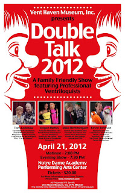

Double Talk 2012
3/31/2012
{kind=link}

Vent Haven Museum presents“Double Talk 2012”
PARK HILLS, Kentucky (February 28, 2012) - Vent Haven Museum is thrilled to announce Double Talk 2012, a family friendly public show featuring professional ventriloquists. The event will be held at the Notre Dame Academy Performing Arts Center, Park Hills, KY, on Saturday, April 21st, with two shows at 2:00 p.m. and 7:30 p.m. The venue is a 400 seat recently constructed theatre and is located at 1699 Hilton Drive, Park Hills, KY 41011, about a mile from Vent Haven Museum.
Double Talk 2012 will feature four of the finest ventriloquists in the business. Megan Piphus began ventriloquism at the age of ten and just a few years later was featured on The Oprah Winfrey Show. Mike Hemmelgarn incorporates magic and juggling with ventriloquism to create one of the most unusual acts in the business. Kevin Johnson is most recognized from his 2006 appearance on NBC’s show America’s Got Talent. He also recently appeared on The Late Show with David Letterman. Tom Ladshaw, the Double Talk emcee, is a veteran of numerous shows and has shared a stage with Regis Philbin, The Smothers Brothers and Roger Moore, to name just a few.
Double Talk 2012 will feature four of the finest ventriloquists in the business. Megan Piphus began ventriloquism at the age of ten and just a few years later was featured on The Oprah Winfrey Show. Mike Hemmelgarn incorporates magic and juggling with ventriloquism to create one of the most unusual acts in the business. Kevin Johnson is most recognized from his 2006 appearance on NBC’s show America’s Got Talent. He also recently appeared on The Late Show with David Letterman. Tom Ladshaw, the Double Talk emcee, is a veteran of numerous shows and has shared a stage with Regis Philbin, The Smothers Brothers and Roger Moore, to name just a few.
This show will serve as a fundraiser for Vent Haven Museum while promoting the art of ventriloquism to local people and raising awareness of Vent Haven Museum in the greater Cincinnati area.
For more information about Double Talk 2012 or to purchase tickets, go to http://www.ventshow.com/ or call Vent Haven Museum at 859-341-0461